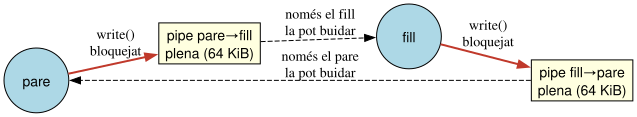
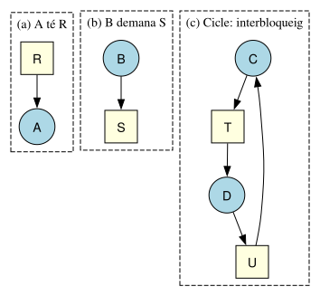
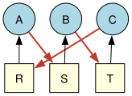
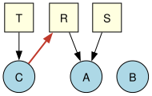
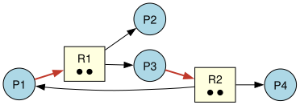
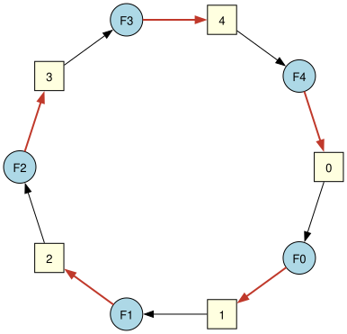

Concepte · Condicions · Prevenció
fork, wait, pipe i descriptors de fitxer.int p2c[2], c2p[2]; // pare->fill i fill->pare
pipe(p2c); pipe(c2p);
char *buf = calloc(n, 1);
if (fork() == 0) { // FILL
write(c2p[1], buf, n); // 1. envia-ho tot
read(p2c[0], buf, n); // 2. després llegeix
exit(0);
}
write(p2c[1], buf, n); // PARE: 1. envia-ho tot
read(c2p[0], buf, n); // 2. després llegeix
wait(NULL);El programa acaba amb:
write() es bloqueja fins que l’altre llegeixi.write(). Cap dels dos arribarà mai al read().
Un conjunt de processos està en interbloqueig si cada procés del conjunt espera un esdeveniment que només pot provocar un altre procés del conjunt.
| Què passa | Es resol sol? | |
|---|---|---|
| Inanició | Un procés espera indefinidament perquè sempre n’hi ha d’altres que passen davant | Pot resoldre’s si canvien les circumstàncies |
| Interbloqueig | Espera circular: cada un espera un altre del conjunt | Mai |
| Livelock | Els processos no estan bloquejats: s’executen, però reaccionen l’un a l’altre sense avançar mai | Rarament |
flock(fd, LOCK_EX));flock(fd, LOCK_EX | LOCK_NB) → EWOULDBLOCK).| Tipus | Exemple | Què passa després d’usar-lo |
|---|---|---|
| Reutilitzable | Fitxer bloquejat, impressora | S’allibera i un altre el pot fer servir |
| Consumible | Bytes d’una pipe, un missatge, un senyal | Desapareix; algú n’ha de produir més |
Els interbloquejos que estudiem són amb recursos no apropiables. Si es pogués retirar el recurs, el SO trencaria l’espera i no hi hauria interbloqueig.
void proces(const char *f1, const char *f2) {
int a = open(f1, O_RDWR | O_CREAT, 0644);
int b = open(f2, O_RDWR | O_CREAT, 0644);
flock(a, LOCK_EX); printf("tinc %s\n", f1);
sleep(1);
flock(b, LOCK_EX); printf("tinc %s i %s\n", f1, f2);
exit(0);
}
// main: un fill fa proces("x.dat","y.dat"); l'altre, proces("y.dat","x.dat")Hi ha interbloqueig només si es compleixen les quatre alhora:
| Condició | Significat | A l’exemple dels fitxers |
|---|---|---|
| 1. Exclusió mútua | Cada recurs és d’un sol procés alhora | LOCK_EX: un sol propietari |
| 2. Retenir i esperar | Un procés que ja té recursos en demana més i espera | A té x.dat i espera y.dat |
| 3. No apropiació | Un recurs només s’allibera voluntàriament | Ningú pot treure el bloqueig a A |
| 4. Espera circular | Hi ha un cicle \(P_1 \to P_2 \to \dots \to P_1\) on cada un espera el següent | A espera B, B espera A |

Tres processos: A demana R i S; B demana S i T; C demana T i R (i després els alliberen).
Ordre 1: A→R, B→S, C→T, A→S, B→T, C→R

Cicle: interbloqueig.
Ordre 2: A→R, C→T, A→S, C→R (B espera torn)

C espera A, però A pot acabar: cap cicle.

| Estratègia | Idea |
|---|---|
| Ignorar-lo (estruç) | Si passa poc i costa molt evitar-lo, no fer res |
| Prevenir-lo | Dissenyar el sistema perquè una de les quatre condicions no es pugui donar mai |
| Detectar i recuperar | Deixar que passi, trobar-lo i trencar-lo |
| Evitar-lo | Abans de concedir cada recurs, comprovar que no hi pot haver interbloqueig |
Prevenir és una decisió de disseny: el sistema no permet una de les condicions. Evitar és una decisió en temps d’execució: el sistema permet les quatre condicions, però tria a qui concedeix els recursos per no arribar mai a un cicle.
1. Exclusió mútua: que el recurs no sigui exclusiu.
LOCK_SH).2. Retenir i esperar: que ningú esperi tenint-ne un altre.
3. No apropiació: permetre retirar recursos.
flock(..., LOCK_NB)).4. Espera circular: imposar un ordre global.
x.dat abans de y.dat (per ordre alfabètic, o per número d’inode).Un cicle seria \(P_1\) té \(R_a\) i espera \(R_b\), \(P_2\) té \(R_b\) i espera \(R_c\), …, \(P_k\) té \(R_z\) i espera \(R_a\). Amb ordre creixent: \(a < b < c < \dots < z < a\). Impossible.
| Condició que es trenca | Com | Inconvenient |
|---|---|---|
| Exclusió mútua | Spooling, recursos compartits | No sempre és possible |
| Retenir i esperar | Demanar-ho tot de cop / alliberar abans de demanar | Cal saber-ho per endavant; poca concurrència |
| No apropiació | Alliberar si no es pot continuar | Livelock; només per a alguns recursos |
| Espera circular | Ordre global | Cal disciplina (o eines que la comprovin) |
fcntl.void filosof(int i, int ordenat) {
// esquerra, dreta
int primera = i, segona = (i + 1) % N;
if (ordenat && primera > segona) {
primera = segona; segona = i;
}
// força l'entrellaçat
agafa(primera); sleep(1);
if (agafa(segona) == -1) {
printf("F%d: %s\n", i, strerror(errno)); exit(1); }
printf("F%d: menja\n", i);
// en sortir, s'alliberen
exit(0);
}
EDEADLK) i ha fet fallar la petició de F3. Amb flock no ho hauria fet.| Solució | Regla | Condició que trenca |
|---|---|---|
| Ordre | Agafa primer la forquilla de número més petit | Espera circular |
| Cambrer | Com a molt \(N-1\) filòsofs poden intentar menjar alhora | Espera circular (un sempre pot acabar) |
| Regla del banquer | No agafis una forquilla si després no quedaria ningú que en pogués tenir dues | Cap: evita l’estat perillós |
Amb 4 filòsofs i 5 forquilles, encara que cada un n’agafi una, en sobra una: algun veí la pot fer servir per menjar, acabar i alliberar-ne dues.